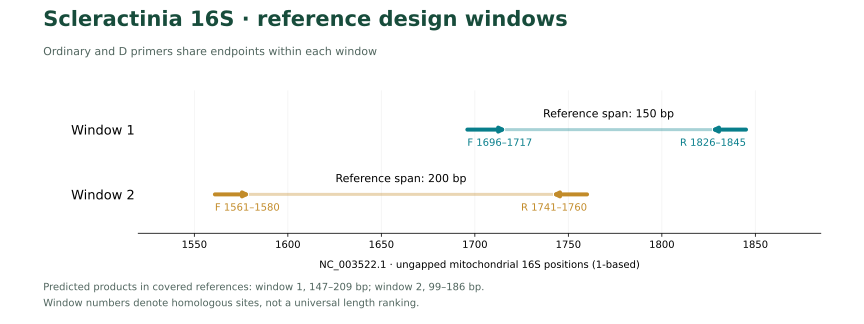
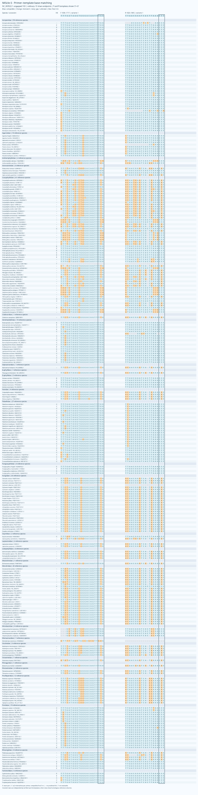
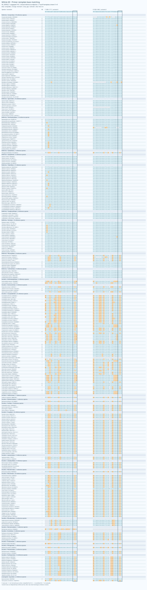
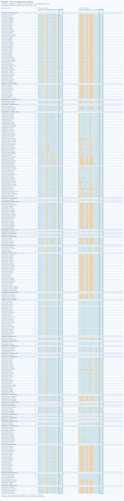
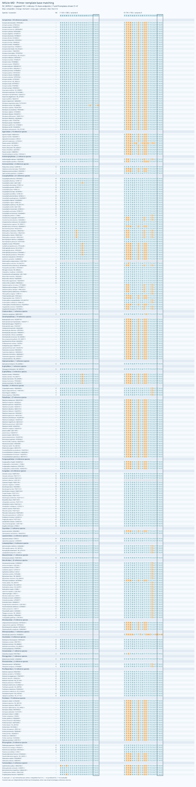

MiScle, a set of PCR primer candidates for metabarcoding environmental DNA from scleractinian corals
本轮得到两个互补窗口，各保留一对普通引物和一对同坐标简并D引物。普通方案参考MiFish的比对、保守锚点与谱系补偿思路；D方案参考Anth-28S-eDNA，按目标模板中实际存在的变异加入少量简并。两者均为本项目新生成的计算候选，并非MiFish或Anth28S原始引物。
在307个具名参考物种中，两窗口合计有305个物种可评价。普通两对分管检测的预测覆盖并集为277/305（90.82%），完全匹配并集为65/305（21.31%）；D两对分别为279/305（91.48%）和206/305（67.54%）。四对引物在9,145条背景参考中的严格WC和GT成对命中均为0。D的主要收益是提高完全匹配率。
短片段存在较多共享条码，尚不能作为可靠的种级鉴定方案，也不能根据计算覆盖直接推断环境样品检出率。建议将两对D与对应普通引物作为平行实验候选。以下两对组合指标均指分别PCR后的检测并集；同管多重扩增尚未评价。
所有序列为靶向部分，按合成方向5′→3′书写，不含接头和标签。S/M表示参考同源窗口，实际产物长度随谱系而异；D仅表示简并。
| 名称 | 设计方案 | F，5′→3′ | R，5′→3′ | F/R简并度 |
|---|---|---|---|---|
| MiScle-S | 普通 | TTTGATAAGTGGGACAGTTTGG |
TTAACGGGTCACTTAAACCC |
1 / 1 |
| MiScle-SD | 简并D | YTKGATAAGTGRGACAGTTTGG |
YYAACGGGTCACTTWAACCC |
8 / 8 |
| MiScle-M | 普通 | AAGTCCCTATGGAGCTTTAC |
CCATAGTTCATTTTCGTTAC |
1 / 1 |
| MiScle-MD | 简并D | AAGWCCCYATGGARCTTTAC |
YCATAGYTCRTTTTCGTTAC |
8 / 8 |
Y=C/T，K=G/T，R=A/G，W=A/T。每条D引物包含8种具体序列；每对最多对应64种F×R组合。简并位点可出现在5′半段，未套用先前其他项目的“仅3′半段”限制。
Hisata等（2025）研究的是石珊瑚12S系统，本设计使用其表1中能够提取16S的线粒体记录作为基础，并补充全部Scleractinia的公开数据，包括非造礁和深海类群。论文表1共核对110个accession，其中65条记录含可用16S，45条仅含其他标记或没有可提取的16S，未将它们当成16S扩增失败。
在NCBI检索1974条记录后，结合论文accession，提取、审核并保留879条合格16S记录用于辅助检查；设计面板按来源taxid与具名双名记录去重，每个物种选一条代表，共307个物种标签、131个属、29个来源科级标签。包括Caryophylliidae、Flabellidae、Dendrophylliidae等类群。分类名称沿用来源注释，尚未完成全部同物异名和科级修订，因此科级数字不代表确认的现行有效科数。
参考基因组为NC_003522.1，提取其注释的大亚基线粒体rRNA（16S）作为坐标参考；多序列比对使用MAFFT。窗口S坐标为F 1696–1717、R 1826–1845，参考跨度150 bp；窗口M为F 1561–1580、R 1741–1760，参考跨度200 bp。普通与D的对应端点完全相同。不同谱系存在插入、缺失，覆盖参考中的预测产物分别为147–209 bp和99–186 bp，均包含引物。

先在多物种比对中寻找可评价度较高的保守锚点，比较参考跨度150–250、251–350和351–500 bp的候选。首轮筛查8863个配对；针对第一对漏检物种补充5582个配对，寻找谱系互补的第二窗口。以物种覆盖为基础，同时考虑来源科级的匹配，防止单一常见类群的保守区挤占全部候选。随后将近缘非目标成对命中纳入筛选。
普通候选来自相应目标谱系的保守共识、真实结合模板和有限的具体序列组合，均仅含A/C/G/T。D候选以实际同源列变异为依据，每条最多8种具体序列，并联合比较覆盖与完全匹配。每个窗口的普通候选独立按覆盖优先、完全匹配次之排序，而不是简单删除D序列中的简并字符。
Primer3评估单价盐50 mM、Mg²⁺ 1.5 mM、dNTP 0.6 mM，比较每变体50 nM和每方向总量200 nM两种浓度情景。检查全部具体变体及其互作，要求最高结构Tm低于55°C、F/R双链Tm区间中点差不超过5°C。端部要求有确定的G/C位点，并排除可能形成5连同聚物的候选；不把末端三连作为绝对排除条件。四对最高预测结构Tm约为42.9–52.5°C；加尾全长和跨窗口同管混合物尚未评估。
背景包括1,938条分层收集的近缘刺胞动物16S记录，以及7,207条冻结棘皮动物参考。近缘背景按Octocorallia、Antipatharia、Zoantharia、Corallimorpharia、Actiniaria及Hydrozoa检索；各层设置记录数上限，并非数据库穷尽。该背景未系统覆盖细菌、共生藻和全部海洋生物。
覆盖允许每条引物最多2个错配，要求各自末端3 nt按IUPAC兼容；完全匹配要求两端均无错配。原始序列扫描同时检查两种方向，目标成对产物为70–500 bp、内部长度至少20 bp。背景扫描允许内部距离0–1000 bp。严格WC和GT保留末端约束；WC3、GT2和WC4为更宽松的敏感性检查。GT是允许G–T配对的计算模型，不能直接等同于PCR结果。
可评价集合依据比对中两窗口是否被序列跨越及是否含模糊碱基确定；内部真实插入、缺失不直接当作缺少数据。每个窗口304个物种可评价，二窗口至少一个可评价的并集为305，两个窗口均可评价的共同集合为303。Heterocyathus aequicostatus和Cycloseris distorta在本面板中缺少足够窗口信息，未计为漏检。
| 方案 | 可评价物种 | 覆盖 | 完全匹配 | 严格WC / GT | 宽松WC3 / GT2 / WC4 |
|---|---|---|---|---|---|
| MiScle-S | 304 | 153（50.33%） | 64（21.05%） | 0 / 0 | 0 / 0 / 0 |
| MiScle-SD | 304 | 155（50.99%） | 125（41.12%） | 0 / 0 | 6 / 0 / 211 |
| MiScle-M | 304 | 124（40.79%） | 1（0.33%） | 0 / 0 | 0 / 0 / 4 |
| MiScle-MD | 304 | 124（40.79%） | 81（26.64%） | 0 / 0 | 4 / 4 / 5 |
| 普通两对分管并集 | 305 | 277（90.82%） | 65（21.31%） | 0 / 0 | 逐对见上 |
| D两对分管并集 | 305 | 279（91.48%） | 206（67.54%） | 0 / 0 | 逐对见上 |
在同一303物种共同集合上，普通与D并集分别覆盖277和279个物种，完全匹配分别为65和206个。MiScle-SD在允许4个错配的宽松WC4模型下有211条背景命中，说明“严格模型为0”不能解释为绝无交叉扩增。
D并集仍有26个可评价物种漏检，主要包括14个来源Caryophylliidae、全部4个Micrabaciidae代表、2个Anthemiphylliidae，以及其他少数物种。因此两对互补方案仍不能称为覆盖全部石珊瑚的通用引物。
逐物种结果 · 逐科/属结果 · 双对组合 · 漏检物种 · 不可评价物种
只统计当前已覆盖参考中的内部条码，不含引物。MiScle-S、SD、M、MD分别有25/153、27/155、26/124和26/124个物种未与其他已覆盖物种共享完全相同的内部条码；跨属共享也存在。该指标是当前参考库中的观察，不是未知样品的鉴定成功率。两窗口的ASV应分别分类，再汇总分类结果；不能把它们当成已连接的多位点单倍型。
下图两端均按引物合成方向5′→3′展示，R端模板已取反向互补。E表示两端完全匹配，C表示允许错配下的预测覆盖，–表示未预测扩增，?表示参考信息不足。已覆盖行显示独立复核的原始序列结合模板，其他行显示参考同源列。可单独打开普通S、简并S、普通M、简并M查看全部物种。




四对候选均完成独立C++穷举扫描与Python位并行扫描，目标覆盖/完全匹配及严格WC/GT背景集合共24项集合比较，差异为0。设计与评价复用了参考库，未进行留出样本或湿实验验证。
python3 scripts/verify.py，无需联网。python3 scripts/check_release.py。下一步宜用覆盖主要造礁类群和上述漏检深海类群的组织DNA，平行测试普通与D，再进行含近缘非目标的混合样本及真实eDNA实验。当前计算证据支持优先测试D方案，分类分辨率仍需结合更长16S或其他标记进一步比较。
Copyright © 2026 Fei Xia (GUIBA-EX). 保留所有权利。未经书面许可禁止转载和再分发受保护的原创材料。参考数据库记录保留原有权利状态，详见 著作权与使用声明。